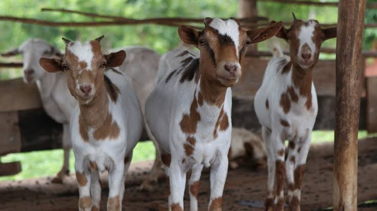

Goat Farming

Goats were probably the first ruminant animal to be domesticated some
8000 years ago. In the ancient civilisations along the rivers of Nile (in
Africa), Tigris and Euphrates (in Asia) and Indus (in India) when
populations migrated from these areas, the domesticated goats spread
through the continents of Europe and America. There are several good
reasons for keeping goats even in preference to larger animals such as
cattle.
These include:
(a) low purchase price
(b) goats reproduce at an early age and have younger ones per litter
than cattle.
(c) they have innate ability to survive on low quality feed or in
difficult conditions or on relatively small amount of feed. In
Nigeria goat keeping is a major form of investment which
keepers in rural area easily use to meet urgent financial needs. A
lot of social and religious functions demand the use of goat for
exchange of goodwill, marital gifts, sacrifices and ceremonies.
Goat meat is a highly cherished delicacy in drinking places and
hotels because of its favourable attributes of low fat, flavour and
relatively low fibre. For these and other peculiarities of goat
keeping, its production is popular by its contribution to the
national economy through the earning of foreign exchange from
export of goat skin also known as “Morocco Leather” as well as
providing employment for a host of individual being a major
commodity for trade between regions.
Origins and history
Goats and sheep are small ruminant belonging to the tribe, called
caprini. This tribe is divided into two parts or genera, Capra and
Hemitragus. The Hemitragus, also called Tahrs, are wild goats found in
Arabia, the Himalayas and south India. They have short stout horns, no
beards, and long shaggy coats. They have only 48 chromosomes in their
cells and do not cross breed with the Capra, which has 60. The
domesticated goat originates from the Capra genus and this includes five
groups or species predominating in regions indicated as follows:
• Capra hircus (Bezoar) West Asia
• Capra ibex (Ibex) Central Asia, Near East, Alps
• Capra caucasia (Tur) West Asia
• Capra pyrenaica (Spanish Ibex) Pyrenees
• Capra fakciberi (Markhor) Afghanistan, Pakistan
The Bezoar is thought to the main ancestor of today’s domesticated
goat, but the Markhor has had a strong influence in Central Asia where
many goats show the long coarse hair and scimitar type horns which are
characteristic of both species. The influence of the Ibex is seen in the
prominent ‘Roman nose of breeds such as the Nubian, Jamnapari and
Beetal.
Distinguishing the origin of goats is not an easy task. It is practically
difficult to tell the difference between a goat and a sheep. The most
effective and simple away is to look at the tail. In good health and not
under stress, a goat’s tail points upwards, that of a sheep hangs down.
Goats can also have beards and the male have tail glands, which sheep
do not. Horn shapes and tail or fibre covering may help classify goats,
but this can be an unreliable method.
2. Goat population and distribution
There are some 639 million goats in the world, of which nearly 80 per
cenr are found in the tropic and sub- tropics. This compares with world
population of 1,067 million for sheep and 1,306 million for cattle. All of
these figures are estimates.
Table 9.1 Goat Populations of the Tropics and Sub- tropics
Millions %
Africa
W. Asia
S.E. Asia
Indian sub – continent
Central America / Caribbean
Other Areas
145
53
14
110
11
18
41
15
4
32
3
5
The largest populations of goat are found in Africa and on the Indian sub
– continent. In the tropics, 20 per cent of the ruminants are goats. It is
also known that the population of goats has been growing at a faster rate
than other ruminants. Goats are found in all types of environments, from
arid to humid zones. They do very well in the drier tropics, where their
ability to withstand dehydration and their browsing habit enable them to
survive where cattle or sheep cannot. This means that they can exist in
fragile ecosystems such as the Sahel where, consequently, they are often
blamed, sometime unfairly, for degrading the natural resource base.
3.2 Breeds of Goat
There are some 300 breeds of goat, many of them located in the tropics
and subtropics. They have developed not only in response to a particular
environment but also because man has selected animals for specific
characteristics. These characteristics include temperament, productivity
and ease of management. There has also been a great deal of crossing
between breeds to produce animals that have the characteristic that are
genetically controlled. Goat breeds are not well recorded in the tropics
and are often defined only by the geographical area in which they live.
Goats can be characterised by
• Origin
• Function
milk, meat, fibre
• Appearance
Ear shape and length
Body size
Height
Colour
Horned or polled shape of face
No one particular method of identification is satisfactory when taken by
itself. Details of some of the most interesting and important breeds in
Africa are presented in Table 9.2.
Table 9.2: Goat Breeds in Africa
Breed Type Location Height at
Withers (cm)
Function
Large goat
Benadir S. Somalia 70 - 78 Meat
Boer S And E Africa 75 – 80 Meat
Landim Mozambiqure 65 Meat
Maabite Algerial 70 - 83 Milk
Mudugh N. Somalia 65 – 75 Meat and Milk
SahelLong legged) W. Africa 70 - 85 Meat
Sudan Desert Sudan 65 – 80 Milk
Sudanese Nubian N. Sudan 71 – 80 Milk
Sukria W. Ethiopia 70 – 80 70 - 85 Meat
Tswana S. Africa 60 - 75 Meat
Small/medium goats
Angora
Boran S. Africa 61 – 65 Fibre
Kigezi E.Africa 60 Meat
Maradi red Sokoto Uganda 60 Meat and hair
Masai Niger, N.
Nigeria
62 – 72 Meat and skins
Somali E. African 64 Meat
Dwarf Goats Somalia 62 Milk
Congo Dwarf
E. African Uganda, Zaire 45 – 50 Meat
Kosi E Africa 50 Meat
S. Sudan Cameroon 45 - 50 Meat
W. African Dwarf Sudan 40 – 50 Meat
Ghana 40 – 50 Meat
Description of Goat Breeds in Nigeria
Sahel Goat (W. African Long- legged goat)
This is also known as the Arab goat in Chad and the Maure in
Mauritania. It is similar to other breeds in North Africa, being very long
legged (70-85cm), and is found in the semi-arid areas in the north of W.
Africa. Many goats of Sahel breed are kept by pastoralists in mixed
flocks with sheep. Not being trypano-tolerant the breed does not survive
in forest and dense savanna where the tsetse fly, the carrier of
trypanosomiasis, is found.
Males weigh 40 kg and females 27 kg when mature. They have small
triangular heads, usually with horns. Their coats are short and very fine.
Sahel goats are primarily kept for their meat, and little milk (less than 80
litres/lactation) is produced. Around 40 per cent of births give twins, and
under pastoral conditions the kids grow very slowly. A carcass dressing
percentage of 48-50 per cent is common in adult goat. Like many desert
breeds, Sahel goats have the ability to maintain their weight long periods
under adverse conditions.
Maradi
This distinctive re-coloured goat lives in Nigeria and Niger where it is
kept in small flocks by Hausa-speaking tribes. Animal are confined
away from growing crops and may be stall-fed. The breed is well
adapted to arid conditions and grows to 25 kg for females and 27 kg for
males. Both sexes have similar shaped horns and males have beards.
Because of the importance of the breed for their skins, the ratio of males
to females in flocks is higher than in many other breeds. The skins are of
the highest quality in the tannery trade and are known as Morocco. Their
ease of tanning makes them very popular for shoes and gloves.
Twining is very common and a litre size of 1.8 is the average. Milk
yields of 0.5-1.0 litre per day have been recorded in experimental
stations over three-month periods. Nannies with twins out-yield those
with singles by some 20 per cent. When killed for meat the carcass yield
is 45-50 per cent of live weight.
West African Dwarf Breed (Fouta Djallon Dwarf)
This breed is very short-legged and measure 50 cm or less in height.
They are usually also in the 18-25 kg weight range. Dwarfs can be
proportionately small all over or just short in the leg.
This dwarf breed is found in west and central Africa, along the Atlantic
coast. It is trypanosome- tolerant and is adapted to the humid forest
zone. Goats are kept in small groups and left to roam about homesteads
as scavengers. In Nigeria, few bucks are kept. In Senegal, flocks are
owned by women and numbers rarely exceed five. When crops are
growing goats will be tethered.
Bucks weigh 25 kg and nannies 22 kg when mature. Their height is 30-
50 cm. Both sexes have horns and toggles whilst bucks have beards.
Colours vary from dark brown to white and red. Twinning is very
common, so average litter size ranges from 1.4 to 1.85kids. Milk yields
reach 0.3 litre per day.
3.3 Systems of Goat Production
A number of different of goat production systems exist, including
subsistence, extensive and intensive. The number of goats kept is often a
helpful factor that indicates the type of system.
Subsistence
Subsistent farmer usually keep small number of animal and manage to
use whatever feed resource are available at village level. This may
involve feeding crop or household residues to stall-fed goats, tethering
individual animals to verges or allowing goats to scavenge.
Tethering is common in parts of South East Asia, South America and
the Caribbean where crops are grown and the goat must be prevented
from damaging feed or cash crops. Goats are tied with ropes or chains to
pegs, trees or post to constrain their movement. They are moved to a
fresh area of grazing once the current patch is eaten down.
Supplementary feeding with crop residues or household waste may be
given, but not usually concentrate. Water is provided at night, when the
goat is returned to its home. Goat may be tethered in small groups or
even led by ropes held by children or woman.
In the middle East, where there is little groundcover for goat to graze,
especially in the summer, small groups of goat owned by farmers
growing dates and catching fish are kept in tiny shaded corrals. There
they exist on a combination of cut grass legumes and leftovers from the
house meals.
Also in the same region are to be found small flock of scavenging goats
that, during hours, forage in dustbins, on rubbish dumps, in urban
building sites, unguarded gardens and on low growing trees. Only at
night do they make their own way back to their owner’s home.
Extensive
Under extensive production systems, goats graze and browse large areas
of land that are usually of a marginal nature, and unsuitable for other
agricultural use. This is usually because rainfall is low or unreliable.
Goats can make good use of these areas provided the number of animals
is controlled to match the carrying capacity of the land. The carrying
capacity is the amount of forage available to sustain a set number of
animals in a given area. The size of flock within this system is often
large, and other species, such as sheep, may also be grazed at the same
time.
Under sedentary systems the grazing available to a flock is limited by
the distance it can travel daily to reach water, shelter at night and the
pastures themselves. A sedentary system is one with a fixed homestead
and set grazing area. Some flocks may be moved to grazing area in
different part of the country to utilize seasonal grazing or crop residues
that are available only for limited period of the year. This is a migratory
system which in some part of the tropics has developed over many
centuries to become a very efficient way of using marginal agricultural
hands.
In parts of African, Asia and India there are two traditional systems of
extensive production which have utilized marginal area very
successfully over long periods. These are nomadism and transhumance.
Nomadism was widespread in the Sahel region of Africa and in the
middle and near East but it is now becoming less common. Nomads
have camps which they move depending upon the amount of water and
pasture available within an area. As traditional livestock keepers they
follow set routes within what are considered tribal lands. Modern day
national boundaries are often ignored.
Transhumance involves the movement of flocks between permanent
settlement and temporary and seasonal pastures as well as between
settlement and temporary and seasonal pastures as well as between
different regional areas. In Europe the flocks are kept in the lower plains
during a winter period and moved to higher mountainous area when the
climate is warm enough to allow vegetation to grow and be accessed.
Apart from altitude, transhumance also occurs between different areas
with the change of season, as in the north- south movement in the Sahel.
Transhumance is found in Africa, S.E. Asia; the near and Middle East
and also in the Mediterranean, Europe and S. America. Animal from
different families may be grouped together for the summer as one large
flock and goat keepers may be hired if the families have other duties.
Goats are often moved to pastures at higher altitudes than cattle because
they are more agile and can better use the sparser vegetable that grows at
these heights.